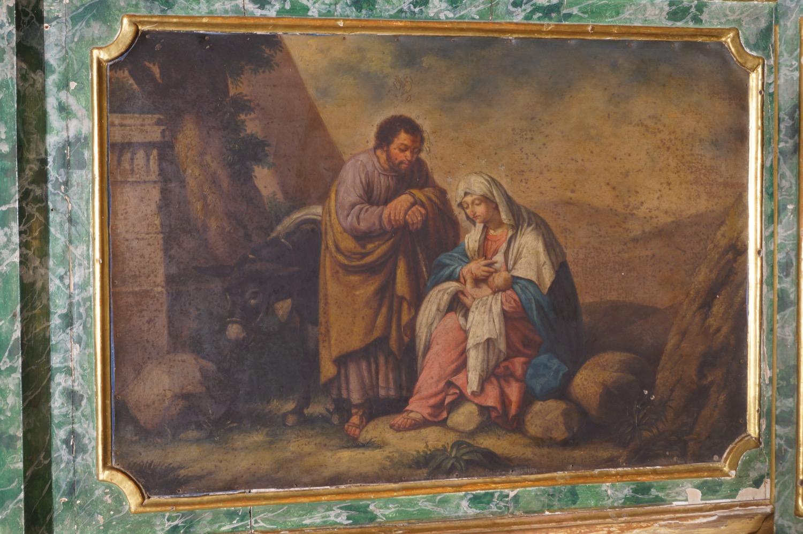

Aquesta pintura representa un descans en la fugida de la Sagrada Família a Egipte. Segons l’Evangeli de sant Mateu, després de la visita dels Reis Mags un àngel s’aparegué en somnis a sant Josep per avisar-lo que el rei Herodes volia matar el Nin Jesús per por que fos el rei dels jueus anunciat per les profecies i que el destronàs, i li ordenà que fugís a Egipte amb la seva família. Sant Josep obeí i marxà a Egipte amb la Verge Maria i el Nin Jesús. Allà romangueren fins que, mort Herodes, se li tornà a aparèixer un àngel en somnis i li ordenà que retornàs a Israel.
En aquest quadre, la Verge hi apareix alletant el Nin Jesús, un detall habitual en moltes representacions d'aquesta escena que reforça el seu caràcter íntim i familiar.